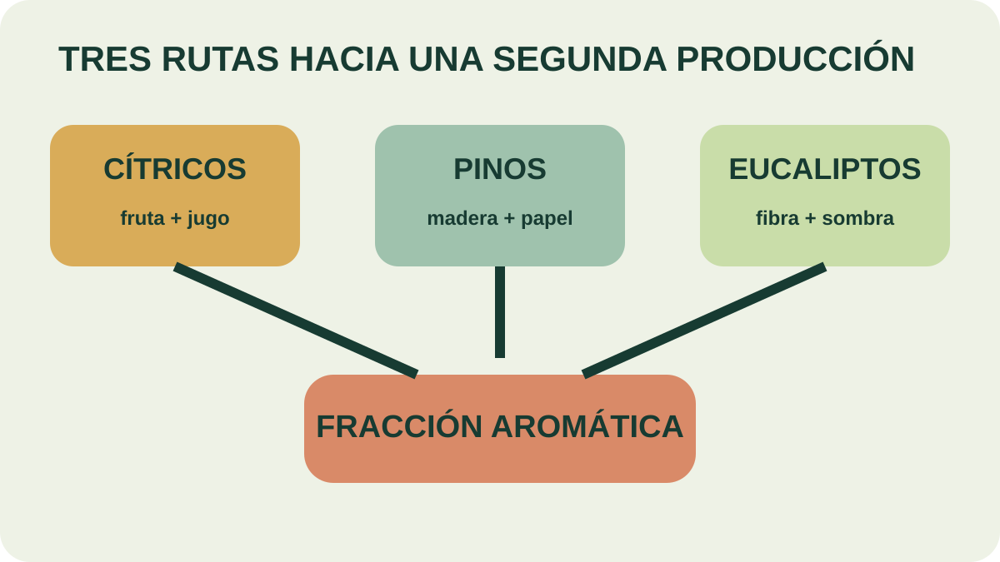

Módulo 29 · 20 minutos
La esencia que nace como subproducto
Al terminar, vas a poder reconocer oportunidades de materia prima aromática dentro de producciones que ya existen.
El aceite que nadie había ido a buscar
Una fábrica recibe cítricos para producir fruta y jugo. Una explotación forestal cultiva pinos para madera o papel. Un establecimiento planta eucaliptos como fuente de fibra, sombra o protección contra el viento. En los tres casos puede aparecer aceite esencial, aunque no fuera el producto que puso en marcha la actividad.
El segundo producto puede cambiar la cuenta
Un aprovecha una corriente material que ya existe. En la industria citrícola, los productos fundamentales son la fruta y el jugo. Entre los secundarios aparecen pectinas, flavonoides, vitaminas y aceite esencial.
La oportunidad no consiste solo en “usar un residuo”. Requiere identificar dónde aparece la fracción aromática, en qué estado llega, cuánto volumen existe y si puede separarse con calidad constante. La materia disponible reduce el costo de comenzar un cultivo desde cero, pero no elimina las exigencias de extracción, registro y conservación.
Del bosque a otra línea productiva
La trementina se obtiene por arrastre con vapor de agua de la resina de pinos del género Pinus. Suele ser una actividad secundaria de explotaciones forestales dedicadas principalmente a madera o papel.
Algo similar ocurre con eucaliptos. Eucalyptus globulus y Eucalyptus citriodora se cultivan para madera, fibra, producción de etanol a partir de lignina, sombra o cortinas contra el viento. El aceite esencial puede integrarse como otra salida del mismo sistema.
La no se transforma automáticamente en emprendimiento esenciero. Primero debe mostrar qué parte se recolecta, qué volumen admite el proceso y cómo evita competir de manera destructiva con el objetivo principal.

Seguí la materia antes de la esencia
Elegí una de las tres rutas. ¿Cuál es el producto principal? ¿En qué punto aparece la materia aromática? Marcá qué proceso del curso habría que incorporar para convertirla en aceite.
Cultivos con destino contratado
No toda oportunidad proviene de una industria paralela. El lúpulo se cultiva casi exclusivamente para cerveza. La mostaza puede producirse mediante para industrias alimentarias que elaboran salsas, mayonesas o curry.
Estos casos enseñan otra lección: antes de plantar conviene comprender quién necesita el material y bajo qué condiciones. Una producción comprometida con un destino conocido enfrenta preguntas distintas de una cosecha que recién después busca comprador.
Mirar primero lo que ya está cerca
Para quien empieza, buscar materia aromática descartada o subutilizada puede ser más realista que fundar una plantación completa. El análisis debe recorrer la región: industrias citrícolas, forestales, huertas, cultivos alimentarios y corrientes vegetales que hoy no se valorizan.
La oportunidad queda definida cuando puede escribirse como una cadena: actividad existente → material disponible → parte aromática → método de extracción → producto posible → comprador. Si falta un eslabón, todavía no hay proyecto; hay una hipótesis para investigar.
Actividad · Dos oportunidades locales
Identificá dos producciones que existan en tu región. Para cada una escribí producto principal, material aromático disponible, época del año, método de extracción posible y destino probable. Señalá qué dato falta antes de afirmar que la oportunidad es viable.
Tener materia prima no alcanza
Una corriente vegetal disponible mejora el punto de partida. Si la esencia será el producto principal, toca mirar el negocio completo: insumos, tecnología, estacionalidad, precios, mercado y costo ecológico.
Guardá esta estación
Cuando puedas explicar la idea central con tus propias palabras, marcá el módulo como completado.